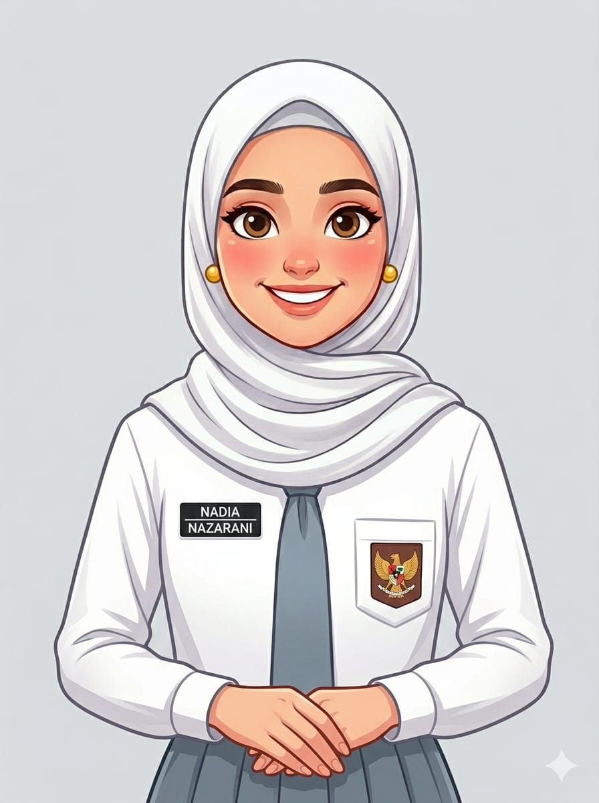

Saya adalah seorang pelajar di SMK Negeri 1 Kandeman, Jurusan saya adalah Pengembangan Perangkat Lunak dan Gim atau yang sering dikenal dengan sebutan PPLG atau RPL. Saya mempunyai hobi yaitu menonton film.
Foto Saya

Saya adalah seorang pelajar di SMK Negeri 1 Kandeman, Jurusan saya adalah Pengembangan Perangkat Lunak dan Gim atau yang sering dikenal dengan sebutan PPLG atau RPL. Saya mempunyai hobi yaitu menonton film.
Kompetensi yang sudah saya pelajari di jurusan saya adalah C#, HTML, dan CSS. Saya sudah dapat membuat halaman web sederhana dan memahami dasar-dasar pemograman.
| Skill | Pengalaman |
|---|---|
|
|